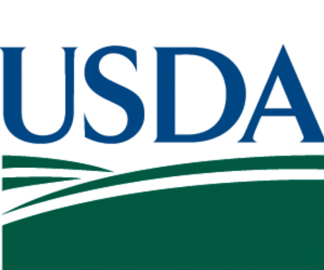
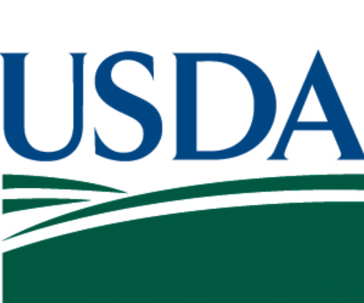
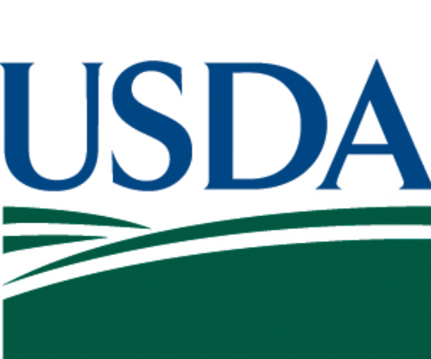
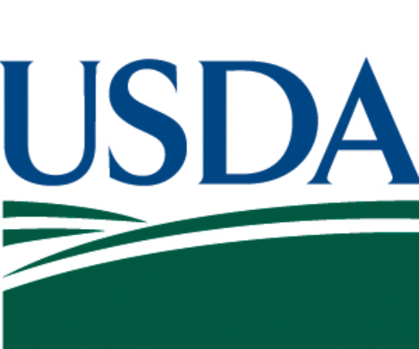

 

Building a sustainable, data-informed, and hyperlocal food supply chain linking farms to bodegas.
This community-driven initiative is designed to create a resilient food supply chain that links local farms and school gardens with Newark's bodegas. This model aims to reflect the value that food access is a right for all.
Supported by Bergen Community College, a federally designated Hispanic-Serving Institution, and Rutgers Business School–Newark, a hub for innovation in urban economic development.
Also funded by the USDA and NIFA to support hands-on leadership training in agriculture, business, food systems, and environmental science.
Mission: Empower Bergen students with hands-on skills in designing and implementing sustainable food supply chains in urban environments.
Objective: Develop a prototype for the Newark Bodegas/Corner Market supply chain that connects farms to small businesses, and support ongoing research in sustainable urban logistics.
Program Dates: June 30, 2025 - July 24, 2025

Program Director

Student Coordinator

Lead Student Coordinator

Student

Student

Student

Student

Student

Student